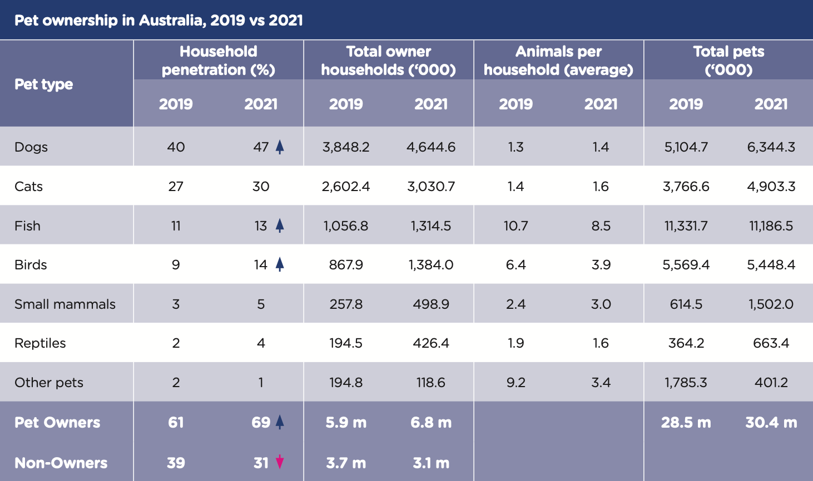
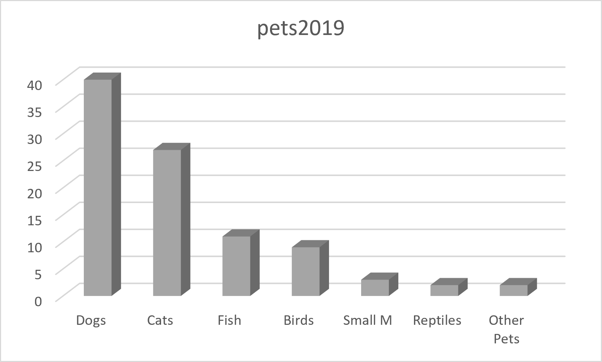

The COVID-19 pandemic changed the lives of many Australians. During this period, pet ownership increased as people looked for companionship, emotional support, and comfort while spending more time at home.
According to Animal Medicines Australia, millions of Australian households own pets, with dogs and cats remaining the most popular choices. Pets played an important role in improving wellbeing during lockdowns.

Read the full report: Pets and the Pandemic (Animal Medicines Australia, 2021)
Click the buttons below to view different visualisations of the pet ownership data.

Below is a demonstration of several SVG shapes with different colours, stroke widths and transparency.